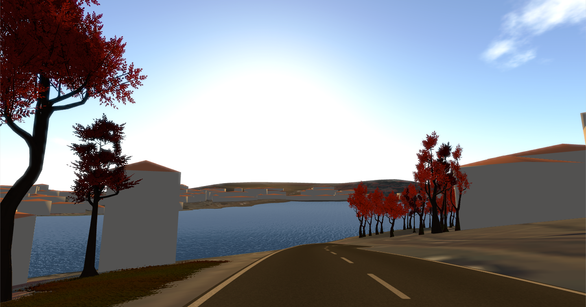
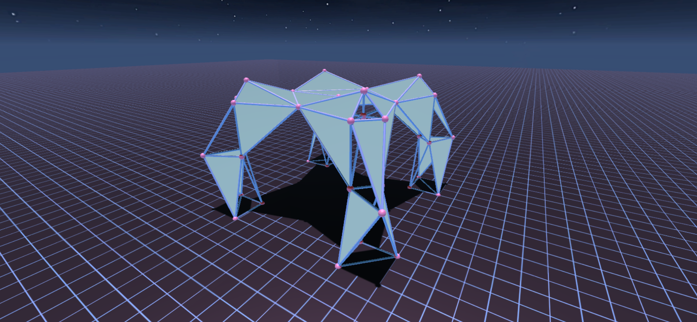
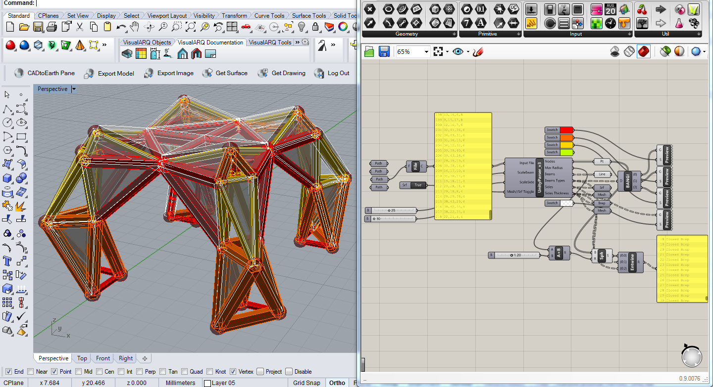
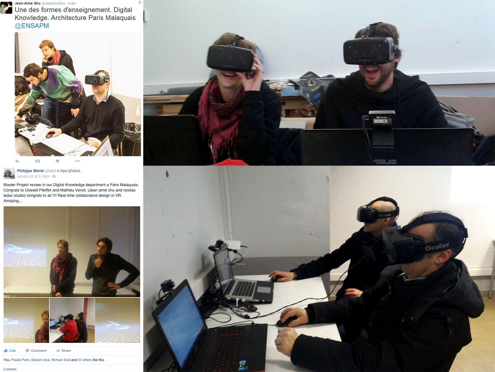

Mathieu Venot
[Naval] | {Computation} | Architecture
P9_ARCHITECTURAL CONCEPTION
22/01/2016 14:00 Categories: Projects / ENSAPM
// THROUGH THE LOOKING GLASS (With OSWALD PFEIFFER) - PFE DIPLOMA




Our work is part of human-computer interfaces researches that are conducted since the 60s, more specifically in the virtual reality field. About twenty years after the first architectural researches of Marcos Novak, Lars Spuybroek, Kas Oosterhuis and many others concerning Cyberspace, this technology is finally on the verge of invading our daily lives. However, almost all architecture related applications for this aspiring technology today are limited to virtual tour.
Our goal is to fully exploit the potential of this media by creating a multi-user software integrating real-time immersive simulations, sketching and communication for an architectural project using Unity3D and Head Mounted Displays such as Oculus Rifts. By using sandbox/serious games types of simulation’s mechanics and interfaces we are convinced that architects and non-architects will be able to conceive public spaces together in a more intuitive way.
In order to demonstrate our purpose, we chose to work on a cable-car project for the city of Porto, Portugal. Because we’re dealing with human-scaled and public architectural objects, we will focus exclusively on the design of the two cable-car stations.
As a first step, we are currently working on geographic data acquisition and on the design of the simulation mechanics, user-interface, network communication and geometry generation in Unity. Later on, we would like to share the software with a small group of people (architects or not) in order to design the cable-car stations over the network in a collaborative perspective.
First semester working on Construction System, Environment Acquisition, Interoperability, and Multi-User Collaboration.
-------------------------
PDF P9 : P9 Presentation
PDF T9 : T9_Paper
-------------------------
{REFERENCES}
- VIRTUAL REALITY / IMMERSIVE SIMULATION
- INTUITIVE DESIGN / INTELLIGENCE AMPLIFICATION / COLLABORATIVE DESIGN & CONCEPTION
- GAME MECHANICS / SANDBOX GAME / SERIOUS GAME
- BIG DATA / SPECIALIZED DATA
- M. NOVAK (Liquid Architecture in Cyberspace) [1991]
- K. OOSTERHUIS (Game Set and Match) [2001]
- J. SANCHEZ (Block Hood) [2015]
Software : David Rutten Grasshopper 3D / McNeel Rhinoceros 3D / Unity3D
Tool : 3D Printer
Teachers : Jean-Aimé SHU / Nicolas LEDUC / Christian GIRARD
Consulting (1)
Essay / ENSAPM (3)
Internship / ENSAPM (2)
Other Work / ENSAPM (8)
Projects / ENSAPM (9)
Teaching / ENSAPM (6)
Essay / ENSAPM (3)
Internship / ENSAPM (2)
Other Work / ENSAPM (8)
Projects / ENSAPM (9)
Teaching / ENSAPM (6)
Jan 2016
Dec 2015
Sep 2015
May 2015
Jan 2015
Jan 2014
Dec 2013
Jan 2013
Dec 2015
Nov 2015
Oct 2015Sep 2015
Aug 2015
Jul 2015
Jun 2015May 2015
Apr 2015
Mar 2015
Feb 2015Jan 2015
Dec 2014
Nov 2014
Oct 2014
Sep 2014
Aug 2014
Jul 2014
Jun 2014May 2014
Apr 2014
Mar 2014
Feb 2014Jan 2014
Dec 2013
Nov 2013
Oct 2013Sep 2013
Aug 2013
Jul 2013
Jun 2013May 2013
Apr 2013
Mar 2013
Feb 2013Jan 2013
Dec 2012
Nov 2012
Oct 2012Sep 2012
Aug 2012
Jul 2012
Jun 2012May 2012
Apr 2012
Mar 2012
Feb 2012
Jan 2012Dec 2011
Nov 2011Oct 2011
Sep 2011Aug 2011
Jul 2011
Jun 2011
May 2011